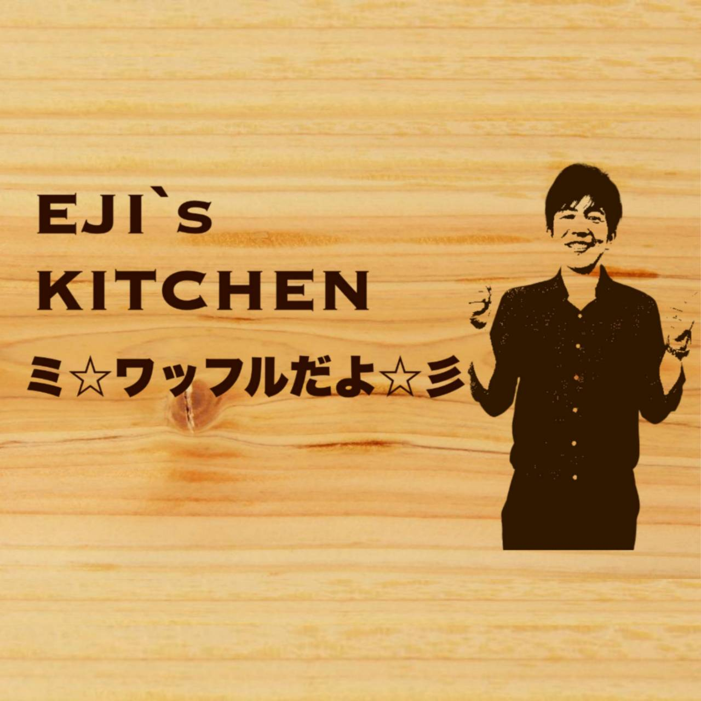
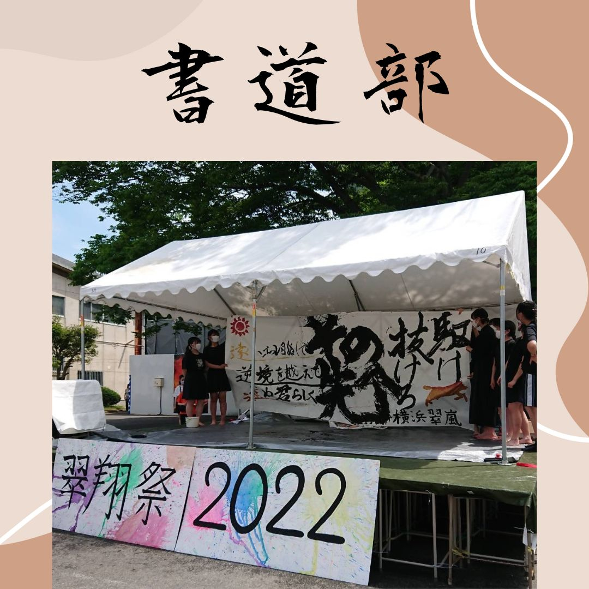
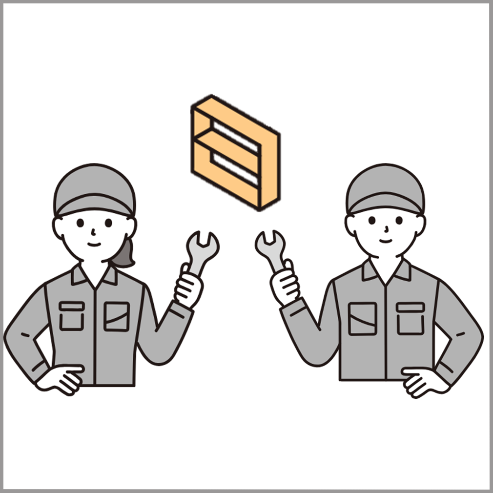

Groups
出展団体
各団体についての情報を掲載しています。
各団体紹介下部に混雑度を表示しています。
混雑を避けるため、空いている団体からお楽しみください。
-

名探偵もりや～衰乱の数学問題（フォーカスゴールド）
構成団体：1-1
- マップ番号：㉛
俺は名探偵守屋崇伸。翠嵐生が課題とデート中に黒ずくめの参考書に殺害された。池原小五郎が探偵をやっている1-1に来て真犯人を暴いてくれ。 -

メイドの冥土送り
構成団体：1-2
- マップ番号：⑳
ご家族やご友人と一緒に気配斬りをしませんか？ふんわりとした雰囲気の中で可愛い（？）メイドさんたちがお出迎えします♡ -
 EJI's KITCHEN ミ☆ワッフルだよ☆彡
構成団体：1-3
- マップ番号：❺
［翠嵐驚愕⁉︎］
大絶賛間違いなしのワッフルが翠翔祭に登場‼︎
元ベルギー住みの本場の人が腕を振るいます（ガチ）
是非ご賞味あれ！ -

スヤ♡コイ～恋の方程式を解き進め～
構成団体：1-4
- マップ番号：⑲
1-4では恋愛シミュレーションをテーマとした脱出ゲームを行います！幼なじみと文化祭の準備をすることになった主人公として様々な選択肢を選び告白を成功させよう！ぜひ来てください！ -

Focus Ghost～蘇った亡霊～
構成団体：1-5
- マップ番号：㉜
数十年前に封印された幽霊が1年5組に復活！解き放たれたトクベツな力で襲いくる幽霊から逃げ切れ！ -

りょっぴのジャンジャン来る～ズ
構成団体：1-6
- マップ番号：⑬
りょっぴのジャンジャン来る〜ズ！！テーマはジャングル！？ポイントによっては景品も？ジャングルにちなんだアトラクションを思いっきり楽しもう！！ -

砂田の楼閣
構成団体：1-7
- マップ番号：②
ポーカーに飢えているそこのキミ！ルーレットを回さないと気が済まないそこのキミ！駆けマリカに木が騒いでいるそこのキミ！1年7組に来るしかない！ -

竜宮城観光振興会
構成団体：1-8
- マップ番号：㉒
始めました、竜宮城の観光業！浦島太郎のおもてなしで破綻しかけた竜宮城を乙姫が立て直すべく皆様に夢心地の思い出をお届けいたします！ -

スイラン・ブレイク
構成団体：1-9
- マップ番号：㉚
テストで低い点数をとって追試になった人が追試から脱出しようとするという設定の脱出ゲームです。 -

甘味処 太田庵
構成団体：2-1
- マップ番号：❾
大正ロマン風の喫茶店。みつまめ、どら焼き、カステラ、よもぎ団子、ラムネ、カフェオレを取り揃えています。大正時代にタイムスリップしませんか? -
喫茶やつもと
構成団体：2-2
- マップ番号：❽
「今日だけ俺らは！」ヤンキーになってのびるくんクッキーや冷たいコーヒーなど、美味しいお菓子と飲み物を提供します！喧嘩上等、いらっしゃいませ。 -

聖母の洞窟～抜けたら〇〇だった件～
構成団体：2-3
- マップ番号：④
翠翔祭最大規模で2-3が行う体験型洞窟探検アドベンチャー！！
行く手を阻む様々な障害物を乗り越えて洞窟を探検し、誰も辿り着いた事のない秘境を目指すアトラクションです！ -

クレープ俺にもクレープ
構成団体：2-4
- マップ番号：❷
とっておきのクレープ、たべてみる？私たち2年4組では、地雷系、ホストをテーマにしたクレープ屋さんを開いています！是非食べてみて！ -

マルベリー卿のホラーコースター
構成団体：2-5
- マップ番号：㉝
マルベリー卿のパーティに招待された参加者達は会場へ向かったが、そこに主催者の姿はない。戸惑う人々の前に一台のトロッコが現れ… -

おおのにHouNO!
構成団体：2-6
- マップ番号：⑭
━オオノを祀るこの神社には、"何か"が出る━
貴方は、厄除けのためとある神社で正体不明の奇妙な声を聞く。この声の正体は、一体...... -

made by maid
～メイドさんとあ・そ・ぼ♡～構成団体：2-7
- マップ番号：㉑
総勢20名を超えるメイドたちが皆さんの日々の疲れを癒します。彼女(？)たちがおりなす圧倒的非日常をお楽しみください。 -

TTのCC
構成団体：2-8
- マップ番号：①
田中貴教先生のコーヒーカップ、略してTTのCCです。日々の悩みや疲れをコーヒーカップの回転で全部吹っ飛ばそう！ -
変日～変な縁日～
構成団体：2-9
- マップ番号：⑫
縁日で定番のゲームから縁日にはないゲームまでいろいろなゲームで遊ぶことができます。高得点を取った人には景品もあるのでぜひ遊びに来てください。 -

枕道場
構成団体：3-1
- マップ番号：⑧
誰もが一度はやった「枕投げ」を武道場で！見回りの先生も来ないので思う存分ストレスを発散しましょう！午後からはサバゲーを開催！いつでも営業しまくってます！ -

バズ・ライトヤスーの
アストロブラスター構成団体：3-2
- マップ番号：㉞
3-2の大型アトラクションへいらっしゃい！大人気トロッコ射的アトラクション。 無限の彼方へさあ行くぞ！ -

とシマえん
構成団体：3-3
- マップ番号：③
急旋回、急降下するスリル満点のジェットコースター。かつて人気を博したあの乗り物が、2日限定で翠嵐に登場！一生忘れられない思い出が、ここに。 -

スプラトゥーン®3.4
構成団体：3-4
- マップ番号：⑨
スプラトゥーンを題材にしたサバイバルゲーム！日頃のストレスをここで晴らしませんか？プール前でお待ちしています！！！ -

亡霊オサムライ
構成団体：3-5
- マップ番号：⑮
3-5の副担任である長谷川修先生をモデルとした侍の屋敷に侵入するお化け屋敷です！あなたは無事に亡霊から逃れて生還できるでしょうか？？ -

人生のメリーゴーランド
構成団体：3-6
- マップ番号：⑱
物語は、空飛ぶ不思議な城、ハウルの動く城の魔法の扉が開かれた時から始まる。その幻想的な世界でメリーゴーランドにのって夢の時間をお楽しみあれ。 -

綿貫パパのじゃがバター屋さん
構成団体：3-7
- マップ番号：❻
ーー優しさで包み込むPotato&Butterーー
蕩けるじゃがいもと薫り立つバター、カラフルなトッピングのハーモニー。 -

隆と野獣“魔法のものがたり”
構成団体：3-8
- マップ番号：⑯
ディズニーランドにある美女と野獣のコーヒーカップを再現しました！ようこそ、真実の愛を描いたものがたりの世界へ。 -

明星 周平ちゃん
構成団体：3-9
- マップ番号：❸
数年ぶりに解禁された屋台。熱血料理人、仲築間周平の監修下で贈る、出店界の王者「焼きそば」。いっぺん食べたらやめられない、至高の一品をあなたへ。〜3-9一同〜 -

まんけん2023
構成団体：漫画研究部
- マップ番号：㊸
こんにちは漫研です！部誌、アンソロジーの配布＆アクリルスタンド・キーホルダーの販売を行います！お絵描きスペースもあるので気軽に来てください！ -

翠嵐名物のびる君
構成団体：生徒会執行部
- マップ番号：㊷
翠嵐ではおなじみの翠嵐ぐんぐんのびる君のグッズを販売！販売するのはクリアファイル、キーホルダー、鉛筆、付箋の4種類。売り切れ御免！ -

アッと驚くアートリエ~あなただけの宝石箱を~
構成団体：美術部
- マップ番号：㉗
ようこそ美術部のアトリエへ！センスのいい(？)美術部員が作ったレジンやラミネート作品を販売します。アッ倒的美しさにアッと驚くこと間違いなし！ -

天文部
構成団体：天文部
- マップ番号：㉙
プラネタリウムへようこそ！
ドームの中で部員があなたを宇宙への旅にお連れします。
また、部誌(無料)の配布や模型、鉱石の展示もあります。 -

翠嵐かるた道場
構成団体：競技かるた部
- マップ番号：㉟
競技かるた部です！一緒にかるたしましょう！百人一首を一枚も知らない人でも大丈夫！豪華景品もあります！ちはやふるの世界へようこそいらっしゃいませ -

鉄道研究同好会
構成団体：鉄道研究同好会
- マップ番号：㉖
今年は特別に、無料でNゲージを運転できます！また、オリジナル切符(数量限定)や暴走プラレールなど、見所盛り沢山です！ご乗車お待ちしています！ -

すうけん！
構成団体：数学研究部
- マップ番号：㊷
例年通り、部誌『翠数誌』を配布します。さらに今年は、皆さんに数学の問題を公開します。参加者には数研の素敵な（？）限定グッズをプレゼント…？！ -

ストラックシュート
構成団体：男女バスケットボール部
- マップ番号：㊳
ストラックアウトのバスケ版です。
正確にシュートを打って高得点を狙え！ -

神業チャレンジ THE MIRACLE
構成団体：サッカー部(2年)
- マップ番号：㊲
少し不気味なレストランを舞台に、神業チャレンジを開催！完全制覇者は現れるのか！？あなたを幻想的な世界へお連れします！！ -

翠嵐王
構成団体：クイズ研究部
- マップ番号：⑥
部員100人を超えるクイズ研究部とハンデマッチでクイズ対決ができます。
あなたは一般常識力がありますか？ -

さかき暮らしのクニモッティ
構成団体：バドミントン部
- マップ番号：㊴
シャトル版ストラックアウトに興味はあるかい？投げたシャトルが放物線を描いて穴に吸い込まれていく快感をぜひ味わいたまえ！ -

かがくぶといっしょ
構成団体：科学部
- マップ番号：㉔
自作ピタゴラスイッチの展示や実験を行います。触って楽しい・見て楽しい展示をたくさん公開しますので、ぜひお越しください！ -

棋道部
構成団体：棋道部
- マップ番号：⑥
憩いを求めているそこのあなた。
棋道部で休んでいくのはいかがでしょう？
(棋道部では将棋やオセロ、トランプなど幅広いゲームを取り揃えています。) -

Water Balloon Festival‼～部員に向かって投げつけろ～
構成団体：男女ハンドボール部
- マップ番号：⑪
ごきげんよう！
最近ストレス溜まってませんか？
勉強しすぎじゃないですか？
そんな時は水風船をぶつけに行こう！
日頃の鬱憤は力づくで解決☆ -

野球部
構成団体：野球部
- マップ番号：⑩
大会前の大切な一戦、お互い勝ってチームに勢いをつけたい中、戦います。普段の学校生活では見れないかっこいい姿をぜひご覧ください！ -
束方シネマ feat.SHBC
構成団体：SHBC(放送委員会)
- マップ番号：㊱
SHBCこと翠嵐高校放送委員会が自主制作した映像作品を放映します。音響設備と空調により、一定の人気を常に保っています。 -

チャトレーゼ
構成団体：茶道部
- マップ番号：❼
茶道部は抹茶アイスとあんこたっぷりの饅頭アイス、そして翠嵐の文字が印字された翠嵐饅頭を販売しています！ぜひ来てください！ -

モッチーのおもっちー
構成団体：男女ソフトテニス部
- マップ番号：❶
ソフトテニス部は、もっちーこと顧問の望月先生にちなんでおもち、ソフトテニスにかけてソフトクリームを売っています！飲み物も種類豊富✨来てね～ -

IT研究部
構成団体：IT研究部
- マップ番号：㉕
部員が制作したゲームを展示します。シューティング、オセロ、テトリスなど色々なゲームを楽しめます。 -

Room Siesta
構成団体：国際交流委員会
- マップ番号：㊵
暑さと喧騒に疲れたら。姉妹校の文集・Tシャツ、大使館訪問の紹介、お楽しみスライドショーなどなど。飲食可の休憩スペースで涼みつつ楽しめます。 -

写真部
構成団体：写真部
- マップ番号：⑰
部員が撮った写真を展示しています！素敵な作品がたくさんあるので、ぜひお立ち寄りください！！ -

翠嵐時報
構成団体：翠嵐時報
横浜翠嵐の第三勢力、翠嵐時報です！受付で翠翔祭特別号を配布します。ここでしか知れない情報が満載なので、受験生必読です！（無くなり次第終了） -

生物部第９師団
構成団体：生物部
- マップ番号：⑤
お世話している生き物たちや、色々な標本、研究成果などを展示します！今年はお饅頭販売はありませんが、その分展示に力を入れて頑張ってます！！ -

文芸部が部誌を無料で配布するよ
構成団体：文芸部
翠嵐高校文芸部、略して「すいぶん」です。
普段の活動の俳句の他に、短歌、小説など部員の力作が揃っています、是非。 -

夜の花咲く音楽会
構成団体：音楽部
音楽部です！今年も体育館ステージで合唱をします。JPOPの大ヒットから懐かしの童謡まで！聞いたあなたは、合唱のトリコになること間違いなし!? -

翠嵐フィルハーモニー弦楽団
構成団体：弦楽部
“クラッシックからポップス…そして聞き慣れたあの名曲まで⁉︎ 楽器紹介も!? 弦楽部60＆61期の演奏をぜひお楽しみください！” -

ミスコン2023
構成団体：サッカー部(3年)
目に見えるモノが真実とは限らない。翠嵐No１は誰なのか。あの人は本当に笑点が好きなのか。真実はステージの上で。Miss＆Mr.の世界へようこそ -
 書道パフォーマンス
構成団体：書道部
音楽に合わせて、書道パフォーマンスを行います。ぜひお越しください。 -
裏ミス・裏ミスター
構成団体：翠翔祭実行委員会総務部
翠嵐の可愛さNo.1男子を決める 裏Miss ！あなたを射止めるのはどの乙女？？キュートな彼女たちに今年も期待せよ！ -

翠嵐スター発掘‼
構成団体：翠翔祭実行委員会総務部 プログラム部
翠嵐の隠れたスターを見つけ出す「翠嵐スター発掘!!」。はたして彼らはどんな凄技を魅せてくれるのか！？野外ステージにて開催！とくとご覧あれ！！ -

スイラン！ブラバン！ビッグバン！
構成団体：吹奏楽部
翠翔祭は“スイラン！ブラバン！ビッグバン！”の演奏を聴かないと始まらないね！！今年はみんなが知ってる曲が盛りだくさん！ぜひ聴きに来てね！ -

翠嵐紅白歌合戦
構成団体：生徒会執行部
第２回 生徒会執行部主催のど自慢大会！
NHKの紅白歌合戦を真似て、紅白に分かれ、一組ずつどちらが良かったか審査します！観客の君たちも審査員だ！ -

ダンス部
構成団体：ダンス部
YSDC全学年で最高のステージを作り上げます！絶対楽しませるのでぜひ来て欲しいです！体育館で待ってます〜！ -

バスケットボール部
構成団体：バスケットボール部
バスケ部にパイをいっぱい投げよう！ -

演劇部オムニバス公演 ある研究者の独白
構成団体：演劇部
- マップ番号：㉘
研究所をテーマにした演劇をします。シリアスなものからコントまで、5~15分程度の短い劇を行うので暇な人はぜひ来てください！ -

ポピュラーソング部
構成団体：ポピュラーソング部
- マップ番号：⑦
ライブやります
3棟1階テキサス(理科実験室)です -

翠嵐ベーゴマ愛好会
構成団体：有志団体
活動一周年。
今年も、仕掛けるか。 -

じょしばと愉快な仲間たち
構成団体：有志団体
吹奏楽経験者による演奏を野外ステージにてお届けします！誰もが知っている有名曲から吹奏楽曲まで盛り上がること間違いなし！ぜひお越しください！ -

すぱげてぃ
構成団体：有志団体
吹奏楽部男子による調理ショー
学年の枠を超えた奇跡のコラボによる、セッションという名の究極のすぱげてぃを召し上がれ！ -

株主爽快
構成団体：有志団体
株主爽快プレゼンツ！赤を基調、黄色をアクセントにした5人のヒーローと青赤白の悪の巨人が戦う感動のストーリーです。驚きの結末にご注目ください！ -

定時制 イラスト・写真部
構成団体：定時制イラスト・写真部
- マップ番号：㊶
定時制イラスト・写真部です。今年も作品展示とポストカードの販売を行います。来校記念にぜひ１枚！お待ちしております。 -

翠嵐のかおり
構成団体：定時制園芸同好会
- マップ番号：㊶
翠嵐で育った花たちから元気を分けてもらいませんか・・・
あなたを翠嵐で待っています・・・
ポプリ・サシェ・セッケン・ハーバリウム販売 etc... -
 定時制 職業科
構成団体：定時制職業科
- マップ番号：㊶
職業科の授業で制作した木工作品を展示・販売いたします。お部屋のインテリアにいかがですか？ -

定時制オールスターズ
Asian Paradise構成団体：定時制全クラス
- マップ番号：❹
中国の餡かけ焼きそば，インドのバターチキンカレー＆ナン，ネパールの餃子モモ，タイのトムヤムクン，フィリピンのスイーツ＆ドリンクを販売します。 -

多文化共生委員会
構成団体：多文化共生委員会
- マップ番号：㊵
翠嵐高校定時制には日本以外に5か国につながる生徒が通っています。今回は私たちの「ふるさと」について書いた作文や、各国の文化・遊びを展示します。また体育館では、練習を重ねてきたネパールの伝統的なダンスをネパール人と日本人の生徒で披露します。様々な文化にふれて「世界」を広げてみませんか。 -

多文化共生委員会
構成団体：多文化共生委員会
定時制多文化共生研究会では、今年も体育館で練習してきたネパールの民俗舞踊を発表します。今年はネパールと日本の混成メンバーでお届けします。ネパール独特のリズムや色鮮やかな衣装にご注目ください。